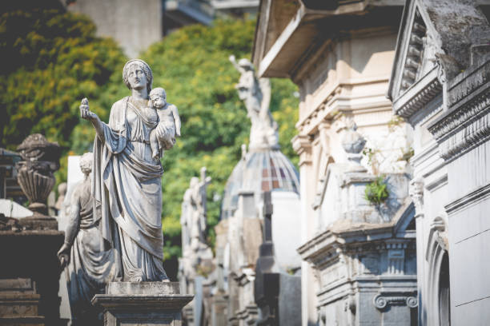

Buenos Aires es la gran capital cosmopolita de Argentina. Su centro es la Plaza de Mayo, rodeada de imponentes edificios del siglo XIX, incluida la Casa Rosada, el icónico palacio presidencial que tiene varios balcones. Entre otras atracciones importantes, se incluyen el Teatro Colón, un lujoso teatro de ópera de 1908 con cerca de 2,500 asientos, y el moderno museo MALBA, que exhibe arte latinoamericano.